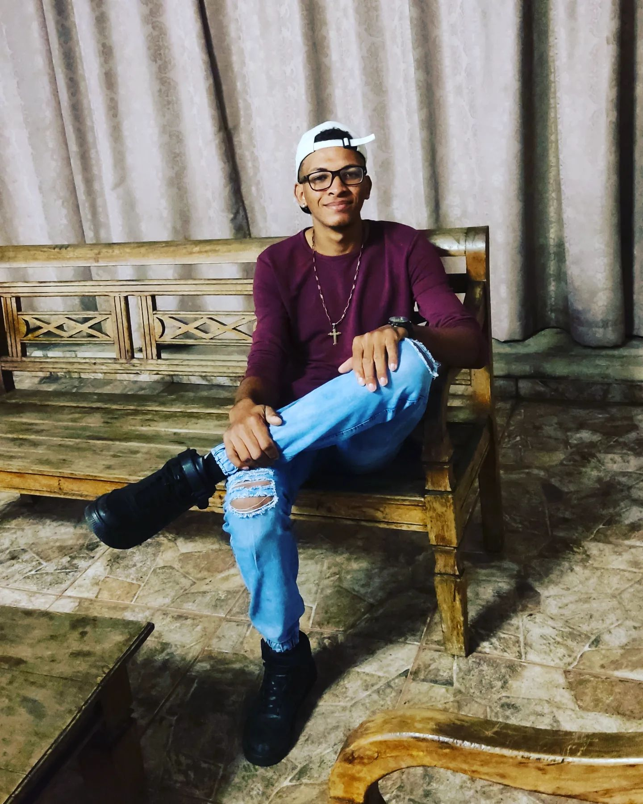

Um pouco sobre mim
Bem, esse sou eu meu nome é Uarles Lemes Dos Santos tenho 19 anos, filho do Fracelino Cordeiro Dos Santos e da Gloria Lemes Dos Santos sou de uma pequena cidade da Bahia que se chama Brejolândia, la é muito bom por que eu fazia muitas coisas, tipo criar gado, cavalo, porco, galinha etc. Um otimo lugar para viver eu mechia com plantações de varios alimentos, tirava leite era uma vida perfeita sem nada pra reclamar, estudava bastente concluir ensino médio feiz alguns cursos saia bastante com os amigos e de bem com todos, ate que em um dis percebir que aquilo não era pra mim estava faltando alguma coisa eu so tinha que descobrir o que era ate começei uma faculdade para mim tornar professor de matematica, mas ainda assim vi que não era o que eu queria sair logo no inicio antes mesmo de começar, decidir que tinha que sair daquele lugar largar tudo para trás meu pai, minha mãe, minha irmã mais nova, amigos, os animais que ate hoje morro de saudade. E vim morar em Divínopolis uma cidade expetacular de Minas Gerais, demorei me acustumar pois ainda estava perdido, ainda não citei mas tenho três irmãos que ja moravam aqui e me derão uma grande força.
Hoje estou trabalhando e estudando, não atingir meus objetivos creio eu que ainda estão muito longe mas o que importa é que eu sei que estou no caminho certo, me descobrir no mundo da tecnologia e hoje quero ser programador. Me tornei cristão nunca achei que um dia eu seria, pela a vida que eu levava, mas enfim me tornei estou amando eu não quero mudar isso ja mais. É isso ai um pequeno resume sobre mim esta feito.